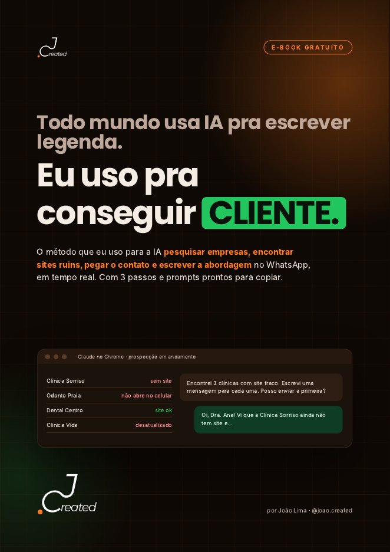
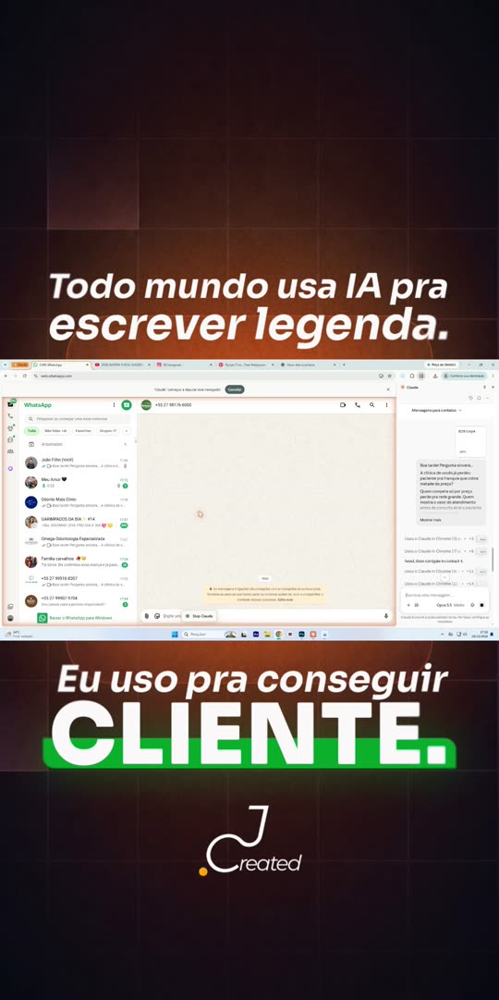

Encontre e faça a triagem
A IA busca empresas do seu nicho e cidade, abre cada site e separa só quem precisa do seu serviço.

E-book grátisTodo mundo usa IA pra escrever legenda.
Baixe o e-book e veja como eu coloco a IA para achar empresas com site ruim, pegar o contato e escrever a abordagem no WhatsApp, sozinha e em tempo real. São 3 passos e 7 prompts prontos para copiar.


O que você viu no reel
O método
A IA busca empresas do seu nicho e cidade, abre cada site e separa só quem precisa do seu serviço.
Ela coleta o contato comercial de cada empresa e monta uma tabela, ordenada de quem tem o pior site.
Cada mensagem cita o problema real daquela empresa. Parece escrita à mão, e por isso as pessoas respondem.
Pesquise no Google e no Google Maps [clínicas odontológicas] em [Vila Velha - ES]. Abra o site de pelo menos 15 delas e avalie cada uma de 0 a 10...
considerando se tem site, se funciona no celular, velocidade, botão de WhatsApp e se o visual está atualizado. No final, me mostre uma tabela só com as que tiraram nota 6 ou menos.
Dentro do e-book
É grátis